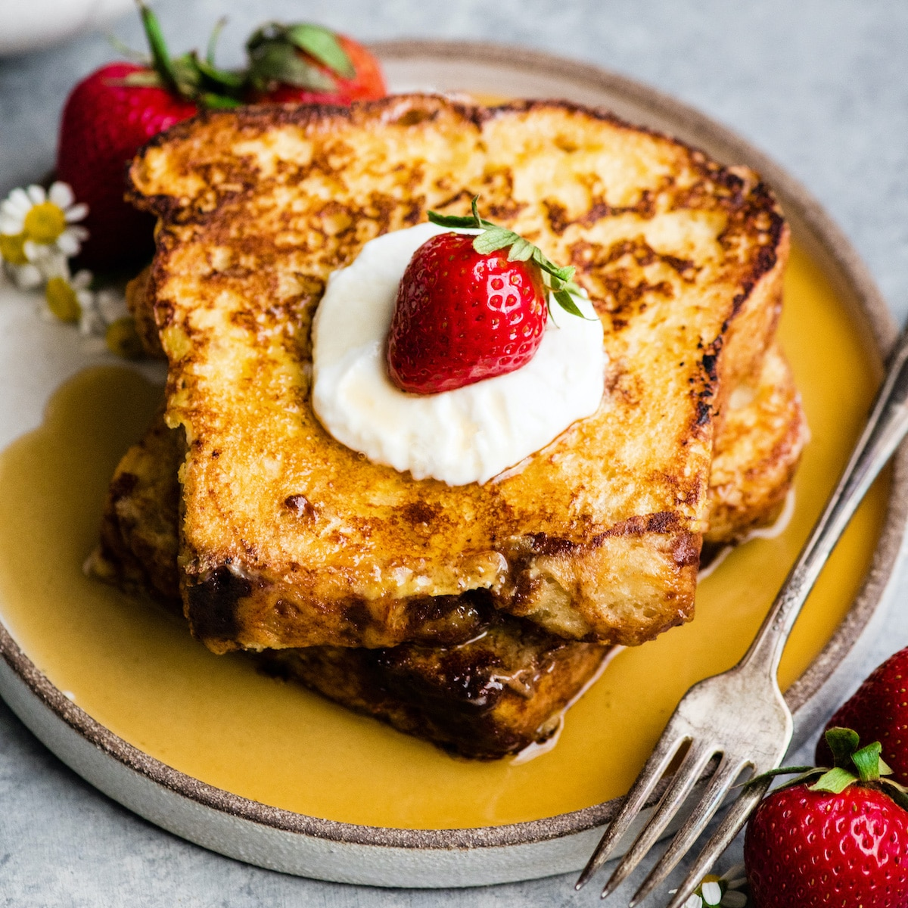

French Toast
Try out this easy, delicious breafast!

Ingredients
Brioche bread
Eggs
Milk
Cinnamon
Vanilla extract
Syrup
Strawberries
Whipped cream
Powdered sugar
Instructions
In a bowl, mix together milk, eggs, and vanilla extract
Dip toast in bowl and coat both sides with mixture
Place bread on frying pan and cook until slightly brown on both sides
Add whipped cream, strawberries, and powdered sugar on top
Finish it off with a drizzle of syrup!